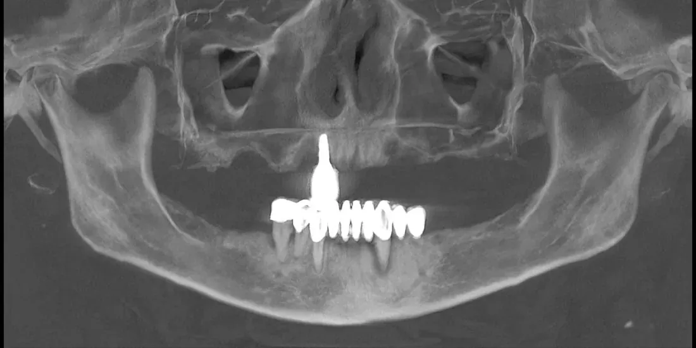
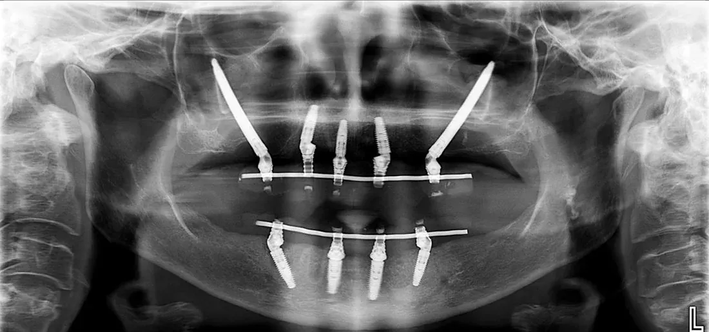

Implantes cigomáticos
«No tienes hueso para implantes» no es la última palabra.
Cuando el maxilar perdió tanto hueso que un implante convencional no tiene dónde anclarse, el implante cigomático se fija en el hueso del pómulo, que permanece intacto. Permite dientes fijos sin pasar por meses de injerto, y en muchos casos con carga inmediata.
Es un procedimiento de alta complejidad. Requiere tomografía, planificación virtual y un equipo que lo realice con frecuencia.
El maxilar atrófico es un problema que trabajo hace años: mi presentación sobre reconstrucción de maxilares atróficos con injertos de hueso de banco obtuvo distinción en el XVI Congreso Latinoamericano de Cirugía Oral y Maxilofacial.
- Te dijeron que no tienes hueso suficiente para implantes
- Un injerto anterior no resultó o se reabsorbió
- Usas prótesis removible superior y no logras estabilidad
- Te propusieron injerto de seno bilateral y buscas otra opción

Antes — maxilar atrófico
Después — rehabilitación completaLos dos implantes largos y oblicuos se anclan en el hueso cigomático, sorteando un maxilar que ya no ofrecía soporte. Se rehabilitaron ambas arcadas con prótesis fija. Los resultados varían según el caso y solo pueden estimarse tras evaluación e imágenes.